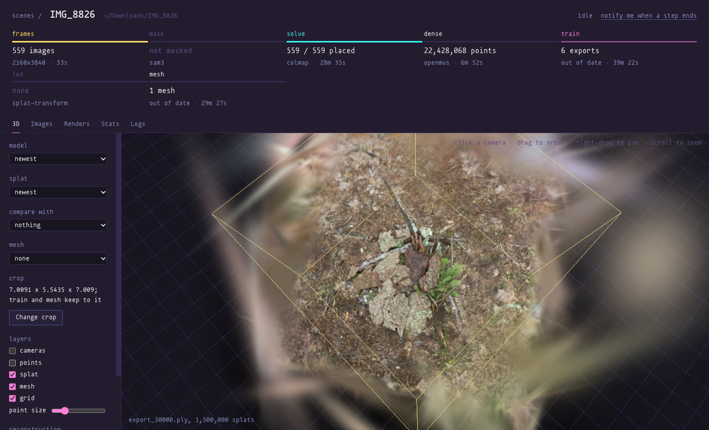

View, orbit, align, crop
The commands around the pipeline: look at a result, render a video, move a splat into a published coordinate frame, keep work to a box, and check what a scene has.
gausser status
gausser status
What the scene has (images, 360° frames, masks, model with its registered count and georeference, dense and LiDAR
points, the newest exports, LOD, mesh and map runs), what is out of date, how much .gausser/tmp/ holds, and
whether every external tool is installed, SAM3 included (patched or not). Run it first when something looks wrong.
gausser view [PLY]
Serves a local SuperSplat build plus one splat (the newest export by default) on 127.0.0.1 and opens it. Use it to
inspect, clean or crop a splat by hand. SuperSplat comes from ~/Developer/supersplat/dist
(GAUSSER_SUPERSPLAT overrides); scripts/install-macos.sh builds it.
gausser orbit [PLY]
gausser orbit --seconds 12 --background jutaka gausser orbit --target 0.1 -0.4 2.0 --radius 3 --height 1 -o statue.mp4
Renders a 360° orbit video with SuperSplat's own video renderer, in a visible Chromium window driven by Playwright
(orbit.mjs); leave the window alone while it renders. The path comes from the COLMAP model: the camera
circles the point nearest all viewing axes, at the median camera distance × --zoom, aimed
--drop below it, with "up" normal to the cameras' level right axes (Brush's own up guess can be far off on
drone sets). --background takes #rrggbb, jutaka or a CSS
linear-gradient(…); a gradient renders twice (over black and white) and ffmpeg recovers alpha to blend it.
Output: runs/orbit/<time>/orbit.mp4.
gausser align MOVING --to REFERENCE… -o OUT
gausser align runs/brush/<time>/exports/export_30000.ply \
--to public/splats/artwork-lod/0_0/meta.json public/splats/artwork-lod/0_1/meta.json -o artwork-aligned.ply
Use it when a re-trained splat replaces a published one: camera presets and placed geometry are in the published
splat's coordinates, but a new solve lands at an arbitrary position, rotation and scale. align fits a similarity to the
opaque splat centres (many starting rotations and scales, trimmed ICP from each, then refinement), lets
splat-transform apply it (quaternions and spherical harmonics rotate along), reads the output back and checks it
against the plan. --to takes anything splat-transform reads (.ply, .sog, LOD meta.json); the
reference may be a cropped part of the new splat. Check the printed trimmed RMS (far below the splat size) and inliers
(~100%). --no-scale fits rotation and translation only. Needs no scene.
gausser crop
gausser crop --box=-1.2,-0.3,-1.1,1.4,2.1,1.0 --up=0.02,-0.99,0.11
gausser crop # show it
gausser crop --clear
Keeps train and mesh to a box around the subject (sparse/crop.json). Brush
starts only from points inside it, the exports keep only splats whose centres are inside (Brush still trains on whole
images), and mesh cuts the surface before refining. The box is axis-aligned in the model's level frame
(cameras' up turned onto +y). Draw it in the monitor's 3D tab and paste the command it shows; the monitor never writes.
Write negative numbers with =. A new crop makes train and mesh out of date; a new solve removes it.


gausser (guided menu)
gausser, gausser FOLDER or gausser VIDEO opens a menu that summarises the
scene, recommends the next step and asks only what that step needs. A video gets a scene folder next to it (removed
again if you cancel before anything is written). The menu returns a command line, prints it and runs it like typed
input. Without a terminal it refuses (exit 2).